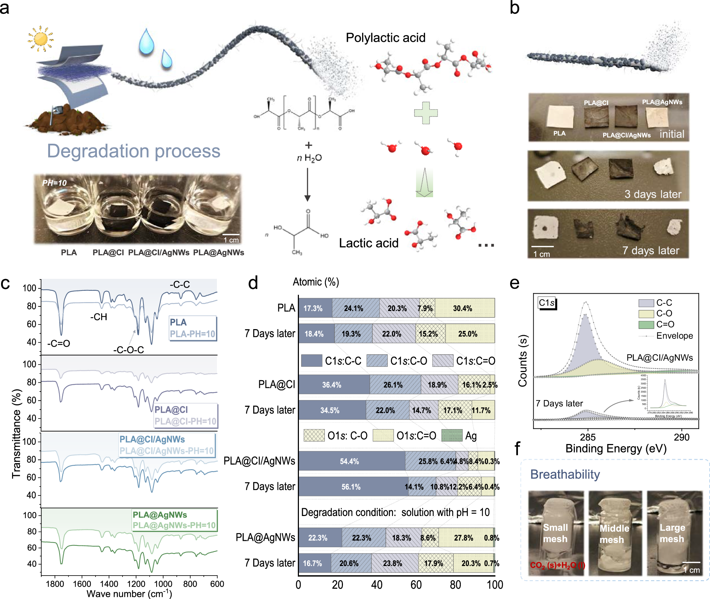
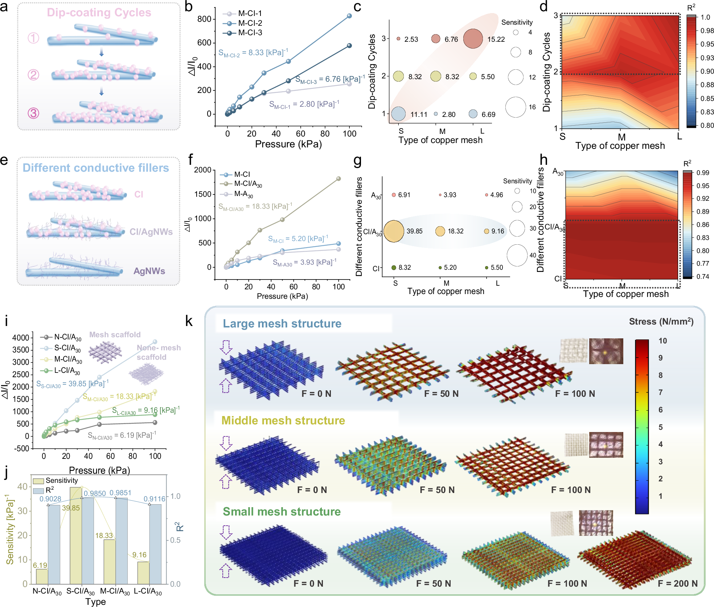
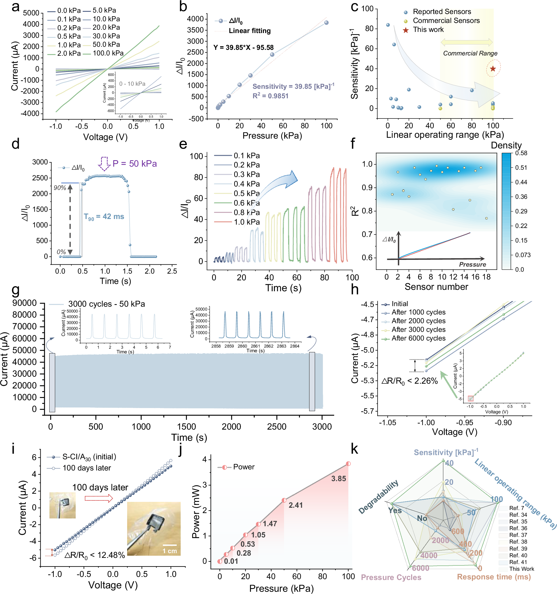
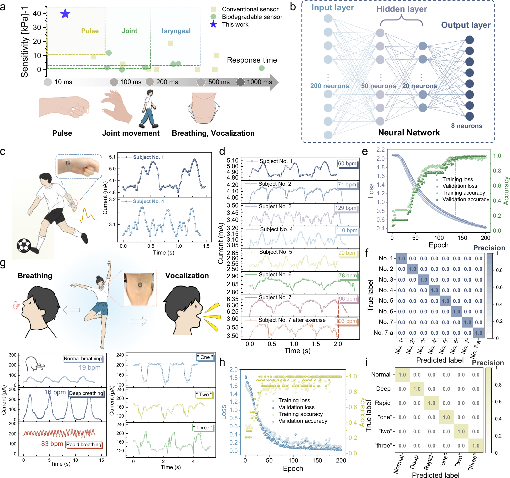
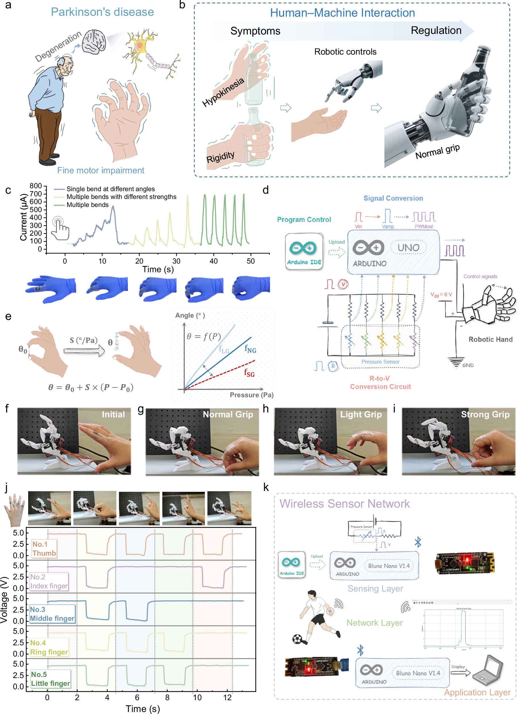

全文精读
用于综合压力感知与人机交互的多尺度人工蛛网
Multiscale artificial spider web for comprehensive pressure sensing and human-machine interaction
解读更新 2026-10-17 10:07 · 依据论文全文整理
全文精读已完成，文章版正在逐步升级。现有内容可继续阅读。
本文针对柔性压力传感器灵敏度、响应速度与机械稳定性难以兼顾的问题，以铜网辅助静电纺丝构建PLA多尺度骨架，再引入碳墨与银纳米线导电网络。优化器件在0–100 kPa内平均灵敏度为39.85 kPa⁻¹，响应时间为42 ms，并展示循环稳定性、生理信号识别及机械手控制。解读：适合作为仿生结构与传感可靠性的案例，但不属于生成式设计方法研究，康复效果和跨对象泛化尚未得到充分证明。
研究问题
柔性压力传感器需同时识别微弱刺激、快速响应并承受重复变形，简单平面或随机结构却容易出现传力低效和机械退化。作者将矛盾归结为传感性能与结构稳定性的权衡，目标是通过层级结构协调两者，而非仅增加导电填料以提高灵敏度。
方法与路线
铜网辅助静电纺丝形成PLA多层纤维及网状骨架，脱模后浸涂碳墨与银纳米线，最终采用小网孔、两次浸涂。作者结合接触、渗流和隧穿模型解释降阻，并通过填料与网孔对照、有限元模拟及循环测试评价结构作用。
创新与比较
作者的设计特点是将多层纤维、网状骨架与核壳导电网络组合，使宏观传力和微纳导电接触协同变化。解读：创新重点在结构与材料的集成，以及点、线、面接触逐步演化的解释，不在Transformer算法或自动生成结构的设计流程。
证据与发现
优化器件在0–100 kPa内平均灵敏度为39.85 kPa⁻¹，R²为0.9851，T₉₀为42 ms；6000次循环前后电阻变化低于2.26%。须区分图4g的3000次连续循环与图4h的6000次前后比较；100天后初始电阻变化为12.48%。
局限与边界
未记录已核实的原文件缺项，乱码公式已按原页纠正。P5、P7存在末位数标注差异；P11注意力模块衔接及测试集角色仍需澄清。解读：随机样本划分不证明跨人泛化，碱性降解不证明整器件自然完全降解，机械手演示不证明临床康复效果。
方向关联
解读：与结构设计和可靠性研究的联系较直接，可参考骨架几何、填料负载和应力传递对电学稳定性的耦合作用；无线采集与多通道控制也可启发智能运维接口。但论文没有生成式设计算法或工业设备验证，与所给方向仅有间接联系。
后续研究建议
建议先复核结构对照及归一化灵敏度定义，再开展跨器件、跨时段和跨受试者测试。若迁移至生成式设计，可将网孔几何作为变量，以灵敏度、应力均匀性及循环漂移为多目标开展实验闭环；这是后续设想，并非作者已完成的成果。
阅读建议
建议作为多尺度结构设计与传感可靠性的交叉案例阅读，重点比较图3的结构对照与图4的耐久证据；若主要寻找生成式设计算法，则不宜列为核心推荐。
原图未改动。以下图注来自标注的来源，不据此补写摘要未报告的实验结论。
已取得的论文原图

原文图注与出处
a Hierarchical structures of the natural spider web and spider predation processes; b Hierarchical structures of multiscale artificial spider web and pressure-sensitive mechanisms; c Copper-mesh-assisted electrospinning process; SEM images of the multiscale structures of the PLA-based sensing layer, d Mesh-scaffold structure (PLA@CI); e Electrospun multilayer fiber structure (PLA@CI); f Core-shell structure (PLA@CI); g Core-shell-network structure (PLA@CI/AgNWs).
Dai, Jing et al.
原文图页 · CC BY 4.0

原文图注与出处
a Schematic illustration of the degradation process of PLA-based pressure-sensitive layers; b Optical images of MASWs before and after degradation; c FTIR spectra of MASWs before and after degradation; d Elemental compositions and chemical bonding states of MASWs before and after degradation based on XPS analysis; e XPS peak fitting of carbon in PLA@CI/AgNWs before and after degradation; f Breathability verification of the MASWs.
Dai, Jing et al.
原文图页 · CC BY 4.0

原文图注与出处
a Schematic illustration of the fabrication of MASWs with different dip-coating cycles; Pressure-sensing performance of MASWs prepared under different dip-coating cycles: b Pressure-response curves; c Sensitivity; d Linearity; e Schematic illustration of MASWs fabricated under different conductive fillers; Pressure-sensing performance of MASWs with different conductive fillers: f Pressure-response curves; g Sensitivity; h Linearity; Comparison of pressure-sensing performance between MASWs with different mesh skeleton sizes: i Pressure-response curves; j Sensitivity and linearity; k Finite element simulations of stress distribution in MASWs with different mesh skeleton sizes.
Dai, Jing et al.
原文图页 · CC BY 4.0

原文图注与出处
a I-V characteristics under pressures from 0 to 100 kPa; b Pressure response curve and linear fitting; c Comparison of sensitivity and linear operating range with reported and commercial flexible pressure sensors; d Response time; e Dynamic pressure response under small pressures (0.1–1.0 kPa); f Statistical analysis of linearity performance of mesh-skeleton-based sensors; g Durability under 3000 cycles at 50 kPa; h Comparison of initial I-V curves before and after 6000 pressure cycles; i Comparison of initial I-V curves before and after 100 days; j Power consumption under pressures of 0–100 kPa; k Comprehensive performance comparison with reported piezoresistive sensors.
Dai, Jing et al.
原文图页 · CC BY 4.0已取得的论文原图


原文图注与出处
a Monitoring requirements of advanced physiological signals (response time and sensitivity); b The components of neural network; c Schematic illustration of pulse monitoring via MASW; d Pulse signals from different individuals (intensity, frequency, waveform); e Loss and accuracy in classifying eight different pulse signals; f Confusion matrix for classification of eight different pulse signals; g Schematic illustration of breathing and vocalization monitoring via MASW; h Loss and accuracy in classifying six different laryngeal movement signals; i Confusion matrix for classification of six different laryngeal movement signals.
Dai, Jing et al.
原文图页 · CC BY 4.0

原文图注与出处
a Illustration of Parkinson’s disease symptoms; b Correction strategies via human-machine interaction; c Monitoring of finger movements with varying angles, forces, and repetitions; d Circuit diagram for MASW-controlled robotic hand; e Adjustable robotic hand control using sensitivity factors; MASW-controlled robotic hand under different states: f Initial state; g Normal grip state; h Light grip state; i Strong grip state; j Complex gesture control of the robotic hand; k Schematic diagram of the wireless sensor network.
Dai, Jing et al.
原文图页 · CC BY 4.0查看公开摘要
Flexible pressure sensors are key components of Internet of Things systems for monitoring environmental and physiological signals, yet simultaneously achieving a high sensitivity, a fast response time, and a high mechanical durability remains challenging owing to the lack of sophisticated structural designs that balance sensing performance and robustness. Here, we demonstrate a multiscale artificial spider web (MASW) fabricated via copper-mesh-assisted electrospinning of biodegradable polylactic acid, forming a nanofiber network that efficiently transmits stress while enhancing mechanical stability. The resulting pressure sensor simultaneously shows a high sensitivity of 39.85 [kPa] −1 , a fast response of 42 ms and high durability over 6000 loading cycles, enabling reliable and versatile neural-network-assisted real-time monitoring of multiple physiological signals, including pulse, breathing, and vocalization. Furthermore, leveraging precise joint movement signal acquisition, a human-machine interaction system was developed with potential applications in fine motor rehabilitation for Parkinson’s disease, suggesting strong promise for sustainable healthcare and IoT systems.